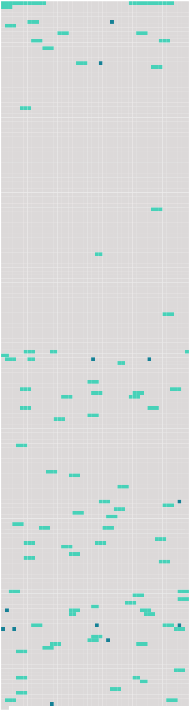

Longueur nb maillons : 91 mentions |
|
[Convention pour l'unification de certaines règles relatives au transport aérien international] ( convention de Montréal )
0039 -0049 [La présente convention] s'applique à tout transport international de personnes, bagages ou marchandises, effectué par aéronef contre rémunération.
[Elle] s'applique également aux transports gratuits effectués par aéronef par une entreprise de transport aérien. [1 phrases] Au sens de [la présente convention] , l'expression transport international s'entend de tout transport dans lequel, d'après les stipulations des parties, le point de départ et le point de destination, qu'il y ait ou non interruption de transport ou transbordement, sont situés soit sur le territoire de deux États parties, soit sur le territoire d'un seul État partie si une escale est prévue sur le territoire d'un autre État, même si cet État n'est pas un État partie.
Le transport sans une telle escale entre deux points du territoire d'un seul État partie n'est pas considéré comme international au sens de [la présente convention] [1 phrases]
Le transport à exécuter par plusieurs transporteurs successifs est censé constituer pour l'application de [la présente convention] un transport unique lorsqu'il a été envisagé par les parties comme une seule opération, qu'il ait été conclu sous la forme d'un seul contrat ou d'une série de contrats, et il ne perd pas son caractère international par le fait qu'un seul contrat ou une série de contrats doivent être exécutés intégralement dans le territoire d'un même État. [1 phrases]
[La présente convention] s'applique aussi aux transports visés au chapitre V, sous réserve des dispositions dudit chapitre. [1 phrases]
[La présente convention] s'applique aux transports effectués par l'État ou les autres personnes juridiques de droit public, dans les conditions prévues à l'article 1. [3 phrases]
Les dispositions de [la présente convention] autres que celles du paragraphe 2 ci-dessus ne s'appliquent pas au transport des envois postaux. [8 phrases]
Il sera donné au passager un avis écrit indiquant que, lorsque [la présente convention] s'applique, [elle] régit la responsabilité des transporteurs en cas de mort ou de lésion ainsi qu'en cas de destruction, de perte ou d'avarie des bagages, ou de retard. [1 phrases]
L'inobservation des dispositions des paragraphes précédents n'affecte ni l'existence ni la validité du contrat de transport, qui n'en sera pas moins soumis aux règles de [la présente convention] , y compris celles qui portent sur la limitation de la responsabilité. [19 phrases]
Article 9 [45 phrases]
Sous réserve de dispositions contraires, dans [la présente convention] le terme " bagages " désigne les bagages enregistrés aussi bien que les bagages non enregistrés. [14 phrases]
Le présent article s'applique à toutes les dispositions de [la convention] en matière de responsabilité, y compris le paragraphe 1 de l'article 21. [21 phrases] Les sommes indiquées en droits de tirage spéciaux dans [la présente convention] sont considérées comme se rapportant au droit de tirage spécial tel que défini par le Fonds monétaire international. [10 phrases]
Les États parties communiquent au dépositaire leur méthode de calcul conformément au paragraphe 1 du présent article ou les résultats de la conversion conformément au paragraphe 2 du présent article, selon le cas, lors du dépôt de leur instrument de ratification, d'acceptation ou d'approbation de [la présente convention] ou d'adhésion à [celle -ci] et chaque fois qu'un changement se produit dans cette méthode de calcul ou dans ces résultats. [1 phrases] Sans préjudice des dispositions de l'article 25 de [la présente convention] et sous réserve du paragraphe 2 ci-dessous, les limites de responsabilité prescrites aux articles 21, 22 et 23 sont révisées par le dépositaire tous les cinq ans, la première révision intervenant à la fin de la cinquième année suivant la date d'entrée en vigueur de [la présente convention] , ou si [la convention] n'entre pas en vigueur dans les cinq ans qui suivent la date à laquelle [elle] est pour la première fois ouverte à la signature, dans l'année de [son] entrée en vigueur, moyennant l'application d'un coefficient pour inflation correspondant au taux cumulatif de l'inflation depuis la révision précédente ou, dans le cas d'une première révision, depuis la date d'entrée en vigueur de [la convention] [7 phrases] Nonobstant le paragraphe 1 du présent article, la procédure évoquée au paragraphe 2 du présent article est applicable à tout moment, à condition qu'un tiers des États parties exprime un souhait dans ce sens et à condition que le coefficient pour inflation visé au paragraphe 1 soit supérieur à 30 % de ce qu'il était à la date de la révision précédente ou à la date d'entrée en vigueur de [la présente convention] s'il n'y a pas eu de révision antérieure. [1 phrases]
Article 25
Article 26
Article 27 [2 phrases]
Article 29 [2 phrases]
Si une action est intentée contre un préposé ou un mandataire du transporteur à la suite d'un dommage visé par [la présente convention] , ce préposé ou mandataire, s'il prouve qu'il a agi dans l'exercice de ses fonctions, pourra se prévaloir des conditions et des limites de responsabilité que peut invoquer le transporteur en vertu de [la présente convention] [13 phrases]
Article 32 [10 phrases] Sous réserve des dispositions du présent article, les parties au contrat de transport de fret peuvent stipuler que tout différend relatif à la responsabilité du transporteur en vertu de [la présente convention] sera réglé par arbitrage. [4 phrases]
L'arbitre ou le tribunal arbitral appliquera les dispositions de [la présente convention] [7 phrases]
Dans les cas de transport régis par la définition du paragraphe 3 de l'article 1, à exécuter par divers transporteurs successifs, chaque transporteur acceptant des voyageurs, des bagages ou des marchandises est soumis aux règles établies par [la présente convention] , et est censé être une des parties du contrat de transport, pour autant que ce contrat ait trait à la partie du transport effectuée sous son contrôle. [5 phrases]
Article 37 [1 phrases]
Dans le cas de transport intermodal effectué en partie par air et en partie par tout autre moyen de transport, les dispositions de [la présente convention] ne s'appliquent, sous réserve du paragraphe 4 de l'article 18, qu'au transport aérien et si celui -ci répond aux conditions de l'article 1. [1 phrases]
Rien dans [la présente convention] n'empêche les parties, dans le cas de transport intermodal, d'insérer dans le titre de transport aérien des conditions relatives à d'autres modes de transport, à condition que les stipulations de [la présente convention] soient respectées en ce qui concerne le transport par air.
CHAPITRE V [1 phrases]
Article 40 [5 phrases]
Aucun accord spécial aux termes duquel le transporteur contractuel assume des obligations que n'impose pas [la présente convention] , aucune renonciation à des droits ou moyens de défense prévus par [la présente convention] ou aucune déclaration spéciale d'intérêt à la livraison, visée à l'article 22 de [la présente convention] , n'auront d'effet à l'égard du transporteur de fait, sauf consentement de ce dernier.
Article 42 [1 phrases]
Article 43
Article 44 [5 phrases]
CHAPITRE VI
Article 50
Un transporteur peut être tenu, par l'État partie à destination duquel il exploite des services, de fournir la preuve qu'il maintient une assurance suffisante couvrant sa responsabilité au titre de [la présente convention] [1 phrases]
Article 52 [1 phrases] [La présente convention] est ouverte à Montréal le 28 mai 1999 à la signature des États participant à la Conférence internationale de droit aérien, tenue à Montréal du 10 au 28 mai 1999.
Après le 28 mai 1999, [la convention] sera ouverte à la signature de tous les États au siège de l'Organisation de l'aviation civile internationale à Montréal jusqu'à ce qu' [elle] entre en vigueur conformément au paragraphe 6 du présent article. [1 phrases] De même, [la présente convention] sera ouverte à la signature des organisations régionales d'intégration économique. Pour l'application de [la présente convention] , une " organisation régionale d'intégration économique " est une organisation constituée d'États souverains d'une région donnée qui a compétence sur certaines matières régies par [la convention] et qui a été dûment autorisée à signer et à ratifier, accepter, approuver ou adhérer à [la présente convention] [3 phrases]
[La présente convention] est soumise à la ratification des États et des organisations d'intégration économique qui [l'] ont signée. [1 phrases]
Tout État ou organisation régionale d'intégration économique qui ne signe pas [la présente convention] peut [l'] accepter, [l'] approuver ou [y] adhérer à tout moment. [3 phrases] [La présente convention] entrera en vigueur le soixantième jour après la date du dépôt auprès du dépositaire du trentième instrument de ratification, d'acceptation, d'approbation ou d'adhésion et entre les États qui ont déposé un tel instrument. [2 phrases]
Pour les autres États et pour les autres organisations régionales d'intégration économique, [la présente convention] prendra effet soixante jours après la date du dépôt d'un instrument de ratification, d'acceptation, d'approbation ou d'adhésion. [1 phrases]
Le dépositaire notifiera rapidement à tous les signataires et à tous les États parties : [1 phrases]
Tout État partie peut dénoncer [la présente convention] par notification écrite adressée au dépositaire. [2 phrases]
Article 55 [1 phrases]
Si un État comprend deux unités territoriales ou davantage dans lesquelles des régimes juridiques différents s'appliquent aux questions régies par [la présente convention] , il peut, au moment de la signature, de la ratification, de l'acceptation, de l'approbation ou de l'adhésion, déclarer que [ladite convention] s'applique à toutes ses unités territoriales ou seulement à l'une ou plusieurs d'entre elles et il peut à tout moment modifier cette déclaration en en soumettant une nouvelle. [1 phrases]
Toute déclaration de ce genre est communiquée au dépositaire et indique expressément les unités territoriales auxquelles [la convention] s'applique. [2 phrases]
Article 57
EN FOI DE QUOI les plénipotentiaires soussignés, dûment autorisés, ont signé [la présente convention] [1 phrases] [La présente convention] restera déposée aux archives de l'Organisation de l'aviation civile internationale, et le dépositaire [en] transmettra des copies certifiées conformes à tous les États parties à la Convention de Varsovie, au Protocole de La Haye, à la Convention de Guadalajara, au Protocole de Guatemala et aux Protocoles de Montréal. |
 |
Il est possible de télécharger la ressource sur la page Ortolang |
Si vous avez des questions ou vous voyez des erreurs, merci d'envoyer un mail à silvia.federzoni89@gmail.com |